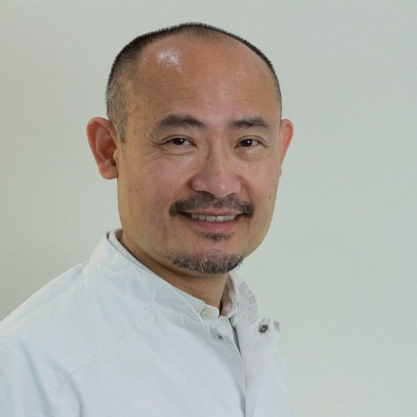
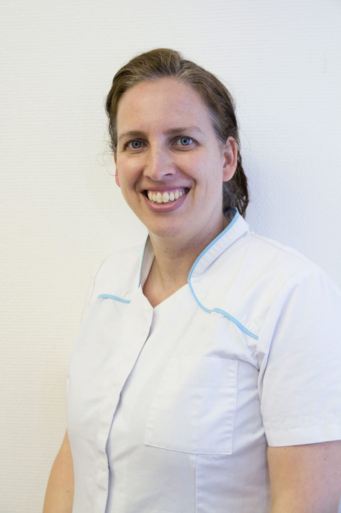
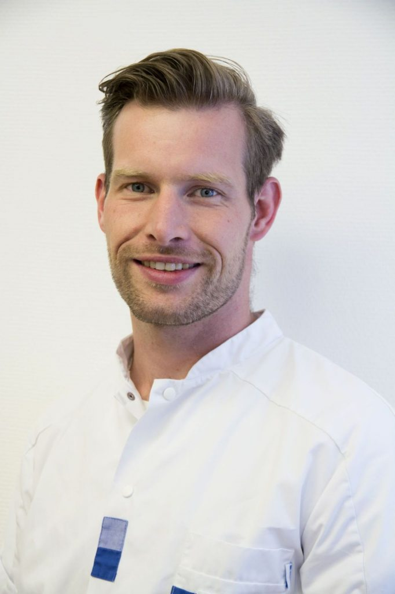
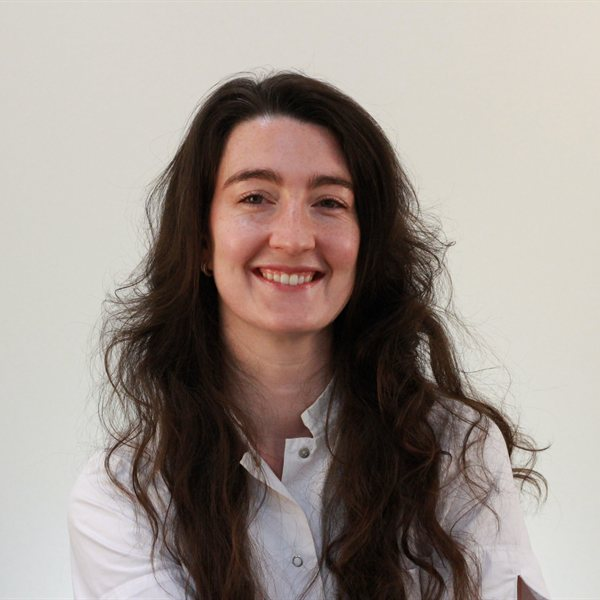
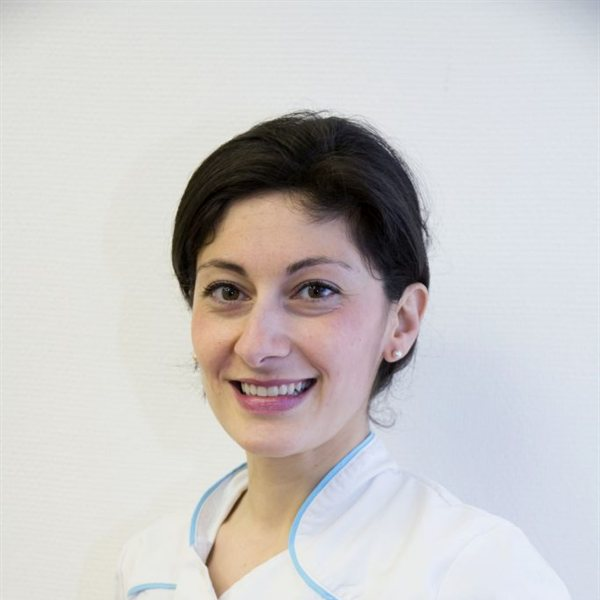
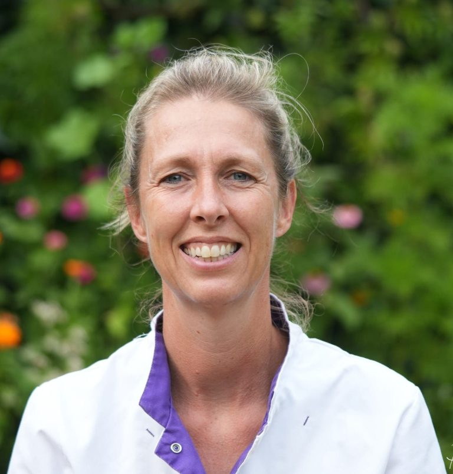
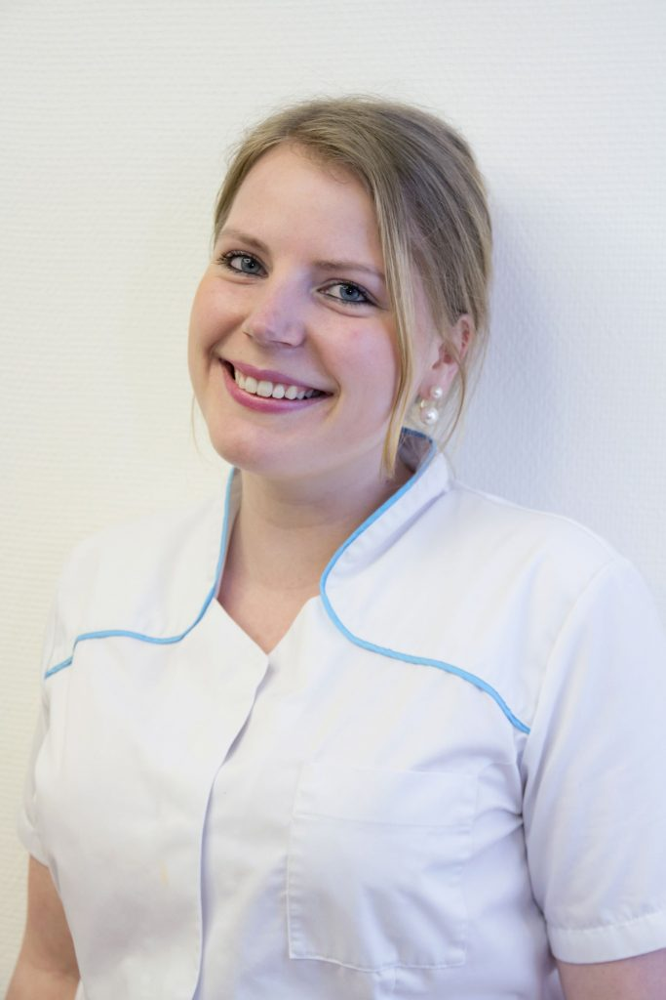
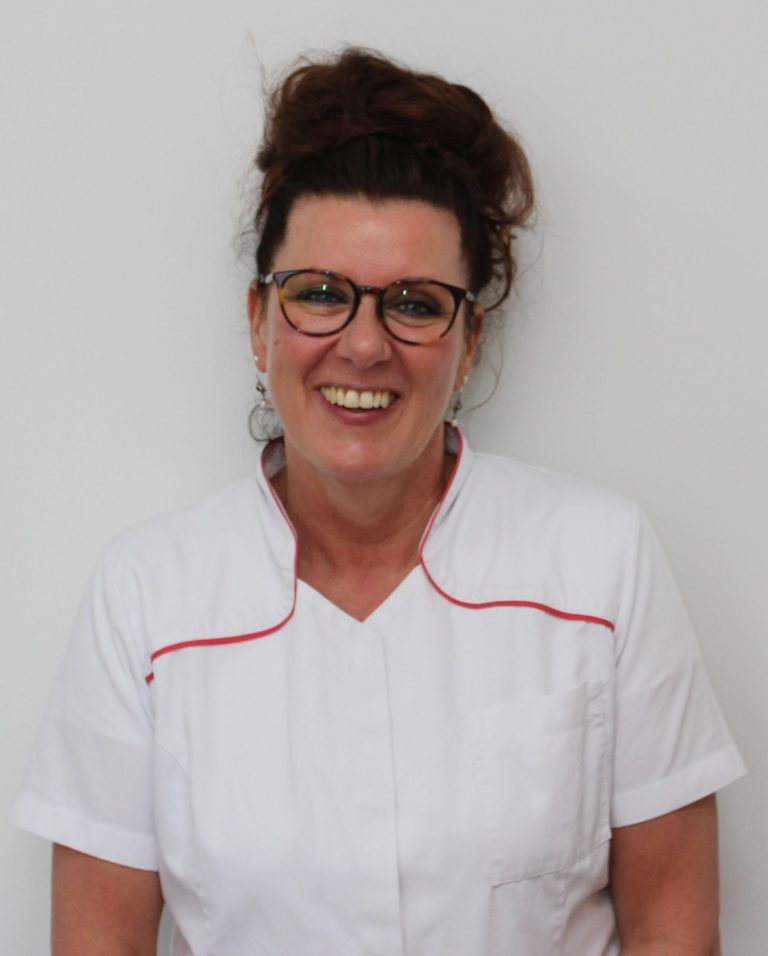
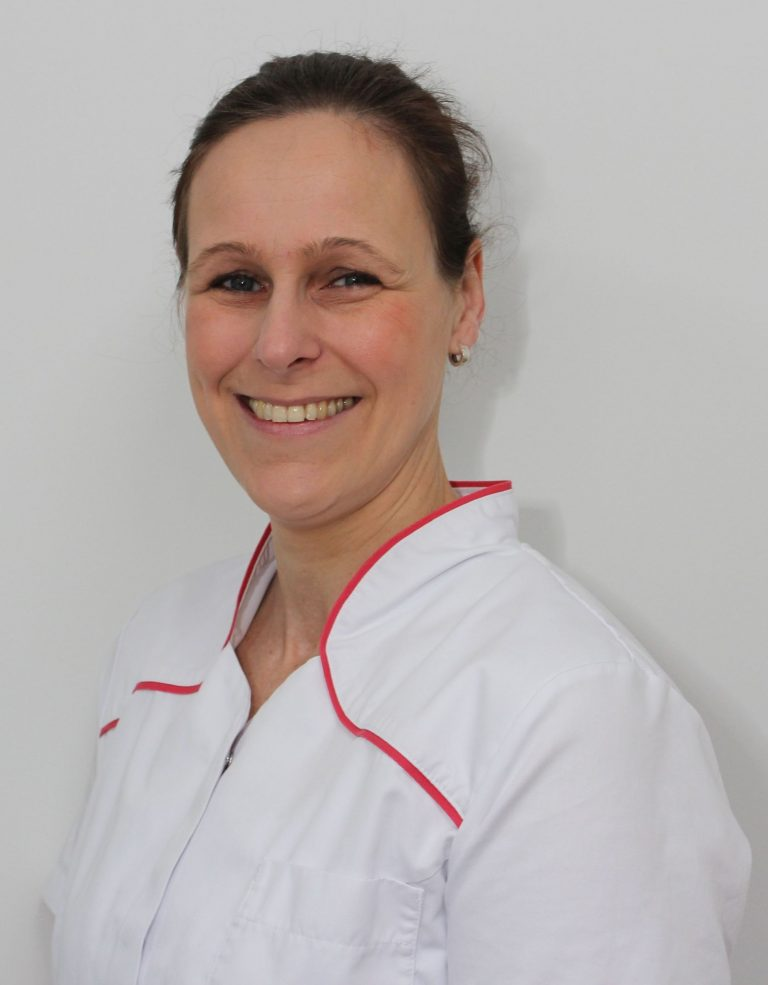
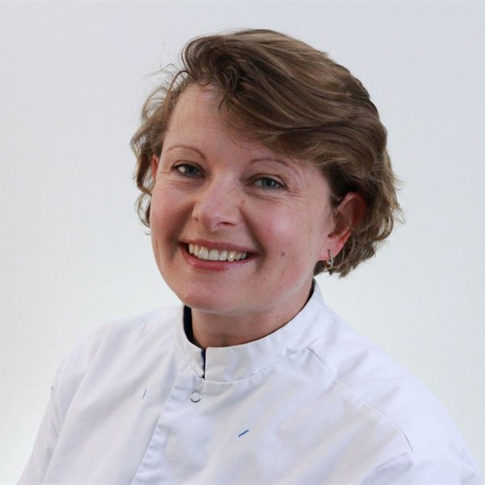

Vu Nguyen
Tandarts-implantoloog / parodontoloogDi — Vr
Een ervaren team van tandartsen, een implantoloog/parodontoloog, mondhygiënisten en assistenten — met aandacht voor u als mens.










Wij groeien met aandacht. Bekijk onze openstaande posities of stuur een open sollicitatie.
Tandarts-implantoloog en parodontoloog. Verzorgt complexe behandelingen — implantaten, parodontale chirurgie en uitgebreide restauraties — binnen onze praktijk.
Aanwezig: dinsdag tot en met vrijdag.
Algemeen tandarts met aandacht voor preventie, restauratieve zorg en kindertandheelkunde.
Aanwezig: maandag tot en met donderdag.
Algemeen tandarts met ruime ervaring in restauratieve en cosmetische tandheelkunde.
Aanwezig: dinsdag en vrijdag.
Algemeen tandarts met aandacht voor preventieve en restauratieve zorg in een ontspannen sfeer.
Aanwezig: dinsdag en woensdag.
Mondhygiënist en praktijkmanager. Eerste aanspreekpunt voor de dagelijkse gang van zaken in de praktijk.
Aanwezig: maandag tot en met vrijdag.
Mondhygiënist met focus op preventie en initiële parodontale therapie.
Aanwezig: maandag tot en met donderdag.
Mondhygiënist, verzorgt periodieke gebitsreinigingen en mondhygiëne-instructies.
Aanwezig: maandag, woensdag en vrijdag.
Preventie-assistent. Begeleidt patiënten met poetsinstructies en preventieve reiniging.
Aanwezig: maandag, dinsdag en woensdag.
Tandartsassistent — assisteert tijdens behandelingen en zorgt voor uw comfort in de stoel.
Aanwezig: dinsdag tot en met vrijdag.
Tandartsassistent — assisteert bij behandelingen en helpt bij de planning aan de balie.
Aanwezig: maandag, dinsdag, donderdag en vrijdag.
Tandartsassistent — assisteert bij behandelingen en helpt bij de planning aan de balie.
Aanwezig: woensdag, donderdag en vrijdag.